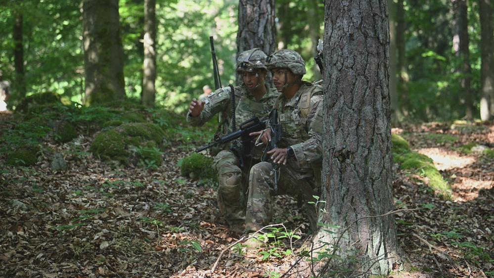

ARGUS connects multi-spectral sensing, local inference and structured outputs as one perception layer inside a larger mission architecture. This dossier documents the four-stage pipeline stage by stage: what enters each stage, what is computed, and what the next system downstream receives.

The pipeline runs from sensor to structured output in four stages: sensor input, edge processing, analytics, and system output. Every stage executes close to the sensor. There is no remote inference hop, no cloud round-trip, no dependency on a processing infrastructure that a jammer or a cut fiber can sever. The architecture is deliberately shaped so that the most contested conditions — degraded bandwidth, contested spectrum, isolated nodes — degrade performance gracefully instead of collapsing the sensing picture.
Each stage hands the next a defined artifact. Sensor input delivers synchronized dual-band frames. Edge processing delivers detections and spatial features. Analytics delivers kinematic and spectral evaluation. Output delivers track, position and classification records in a structured form a mission system can consume. The interfaces between stages are the architecture — everything else is implementation.
Continuous optical and short-wave infrared imagery from compatible airborne, perimeter or fixed sensor platforms. Frames are synchronized at capture so both bands describe the same instant of the scene — the fusion model consumes a coherent stereo-temporal input, not two staggered views. Input conditioning handles exposure equalization, band registration and dead-pixel masking before inference sees a frame.
Neural-network inference converts incoming frames into detections, spatial features and persistent subject tracks. Quantized CNN models run on the sensing node's compute module with deterministic worst-case latency budgets; frame-skip logic sheds load before it sheds tracks. No frame leaves the node to become a detection — every detection is born at the sensor.
Movement signatures and multi-spectral anomalies are evaluated as additional inputs to subject classification and scene understanding. Gait, stride and cadence models distinguish subjects and re-associate tracks through occlusion; spectral reflectance behavior separates human subjects from decoys, animals and vehicles. Classification carries confidence data — the downstream operator adjudicates, the machine does not decide alone.
Structured machine-generated outputs are made available for integration with downstream mission, security and command systems. Outputs are synchronized records — not video streams requiring a human to watch. A fires cell, a command dashboard or a BMS receives data it can act on: persistent tracks with position history, classification and confidence, timestamped and geo-referenced.
| STAGE | CONSUMES | PRODUCES | RUNS |
|---|---|---|---|
| SENSOR INPUT | Scene radiance (visible + SWIR) | Synchronized, conditioned dual-band frames | Sensor platform |
| EDGE PROCESSING | Dual-band frames | Detections, spatial features, track seeds | Sensing-node compute |
| ANALYTICS | Detections + track history | Kinematic signatures, spectral classifications, confidence | Sensing-node compute |
| SYSTEM OUTPUT | Analytics records | Track / position / classification, geo-referenced, timestamped | Sensing node \u2192 mission system |
OUTPUT SYNCS TO THE MISSION ARCHITECTURE WHEN CONNECTIVITY EXISTS. THE PIPELINE DOES NOT REQUIRE IT TO.
ARGUS is a perception subsystem designed for integration into larger defense and security architectures requiring persistent machine-generated sensing. It is not a walled application. The output stage publishes structured records that downstream systems consume through their own integration paths — command dashboards, BMS interfaces, ATAK networks, C2 layers — without requiring the host architecture to be redesigned around ARGUS.
The same discipline applies upward: ARGUS does not demand ownership of the sensor suite. Compatible airborne, perimeter and fixed-site platforms feed the input stage; ARGUS adds the perception layer that turns their imagery into tracks. For system integrators and defense contractors, this means ARGUS can be incorporated into existing platforms and mission systems without requiring the entire sensing architecture to be redesigned around centralized processing.
Failure behavior is specified as carefully as nominal behavior. A node that loses backhaul keeps producing tracks locally; a node that loses a sensor band continues on the surviving band with reduced classification confidence, clearly flagged in the output records; a node that cannot maintain track integrity degrades to detection-only output rather than emitting low-confidence tracks that a downstream fires decision might act on. The architecture refuses to fail loudly, and refuses to fail silently.
Architecture claims are validated at the Aranruth proving ground — the Volume — under live spectrum with real operators attempting to defeat the system. Pipeline behavior is tested against adversarial movement, deliberate occlusion, band-specific blinding attempts and contested backhaul. Every certification cycle produces failure reports that feed directly into the next build review: the pipeline documented here is the pipeline that survived the basin, not the one that looked correct on paper.
Integration partners can witness serials at the basin under controlled conditions — see the access page for program intake. Technical demonstration programs include pipeline instrumentation: stage-level timing, detection counts, track-continuity metrics and degradation-event logs, so integrators can verify the architecture's behavior against their own requirements rather than take a datasheet's word for it.